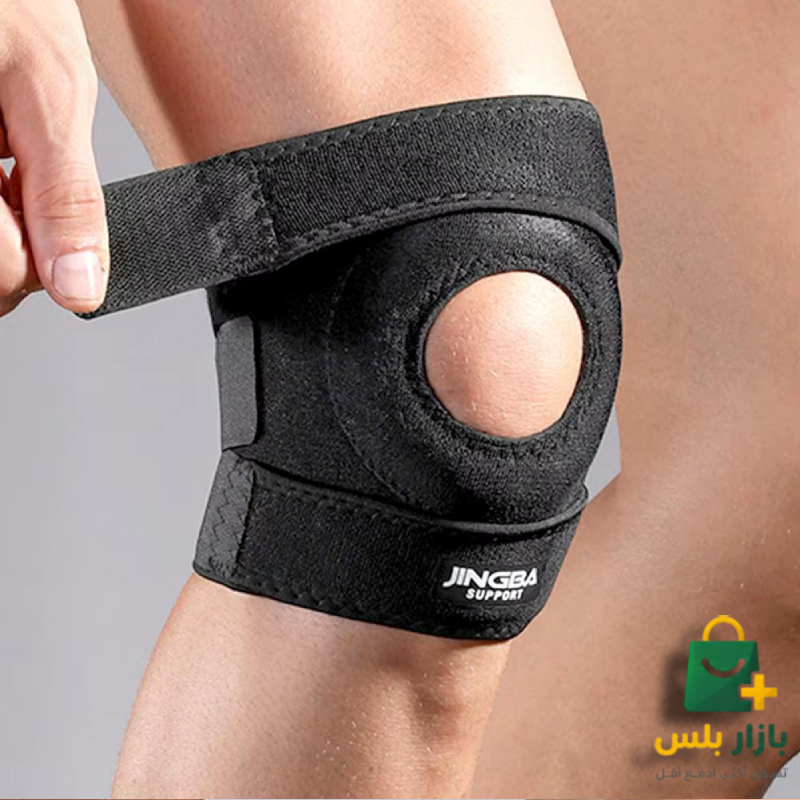

🆕 وصل حديثاً

سعر العرض الخاص:
اطلب الآن والدفع عند الاستلام
239 د.ل
380 د.ل
تفاصيل ومقاطع المنتج
.png)
.png)
.png)
.png)
.png)
.png)
⏰ العرض ينتهي قريباً جداً!
45ثانية
:
22دقيقة
:
03ساعة
تبقى 5 قطع فقط في مخزن طرابلس اليوم!
مشد الركبة المفتوح JB-8006
وداعاً لآلام الركبة والخشونة أثناء الحركة!
القصة والهدف
لماذا مشد الركبة المفتوح هو خيارك الصحي الأول؟
تمتع بحرية الحركة والوقوف بدون قيود أو آلام مع مشد الركبة المفتوح JB-8006. صمم هذا المشد الطبي خصيصاً بفتحة رضفية دائرية مبطنة تحيط بالصابونة لتقليل الضغط المباشر عليها وتجنب الاحتكاك الضار بمفصل الركبة.
يستخدم الحزام نيوبرين علاجي حراري يحتفظ بحرارة الجسم الطبيعية، مما يعزز تدفق الدم والأكسجين للمفصل ويساعد بفاعلية على تسكين آلام الخشونة، والالتهابات، وآلام الأربطة بشكل فوري. كما تتيح أشرطة الفيلكرو الثلاثة إمكانية ضبط وتعديل الشد لتوفير ثبات كامل للركبة أثناء الصعود، النزول، أو ممارسة التمارين الرياضية.
دعم مفتوح للصابونة
نيوبرين علاجي حراري
أشرطة تحكم مرنة
تخفيف آلام المفاصل
المميزات والفوائد
أهم مزايا مشد الركبة JB-8006:
- دعم مفتوح للصابونة: حلقة دائرية مبطنة بالسيليكون تحافظ على ثبات صابونة الركبة وتمنع احتكاكها.
- نيوبرين علاجي حراري: يوفر تدفئة موضعية للمفصل تقلل التيبس العضلي وتسرع شفاء المفاصل.
- ثلاثة أحزمة شد لاصقة: تضمن توزيعاً متوازناً للضغط وتمنع انزلاق أو تحرك المشد أثناء المشي أو الركض.
- نسيج داخلي قطني مخرم: مريح للبشرة، يمنع تراكم العرق ويحافظ على تهوية الركبة طوال اليوم.
من يستفيد من هذا المنتج؟
من يحتاج هذا المنتج ومتى تستخدمه؟
- مرضى خشونة الركبة والاحتكاك: لتخفيف وتخفيض الألم بشكل ملحوظ أثناء الوقوف، الصلاة، أو صعود الدرج.
- الرياضيون: الذين يمارسون تمارين القرفصاء (Squat)، الجري، أو التمارين الشديدة لحماية المفصل من الإجهاد.
- التعافي من الإصابات: مثل التواءات الركبة الخفيفة وإصابات الغضروف الهلالي التي تتطلب دعماً طبياً.
المواصفات الفنية
المكونات والمقاس
- المواد: نيوبرين طبي عالي الجودة، مغطى بنسيج قطني ناعم وصديق للجلد.
- المقاس: مقاس موحد قابل للتعديل والتحكم بالكامل (One Size Fits Most).
- التصميم: تصميم مريح ومناسب للاستخدام اليومي للرجال والنساء على حد سواء.
تقييمات زبائننا في ليبيا
الأسئلة الشائعة
هل المشد مريح للارتداء طوال اليوم؟
نعم، الخامة الداخلية مصنوعة من نيوبرين طبي مغطى بنسيج قطني ناعم ومخرم لتهوية الركبة وتقليل التعرق أثناء المشي أو ممارسة الرياضة.
كيف أعرف المقاس المناسب لركبتي؟
المشد مصمم بمقاس موحد قابل للتعديل بالكامل (One Size Fits Most). تناسب أشرطته اللاصقة معظم مقاسات الأرجل للرجال والنساء على حد سواء.
هل هذا المشد يساعد في خشونة الركبة؟
بالتأكيد، يوفر حماية وثبات لمفصل الركبة ويقلل الضغط الاحتكاكي في صابونة الركبة، مما يخفف الألم بشكل ملحوظ أثناء الوقوف أو صعود الدرج.